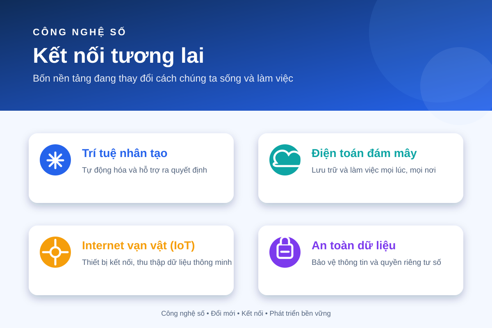

Infographic
Khám phá bốn nền tảng quan trọng của công nghệ số hiện đại.

Lab 5 · Exercise 3.1
Trang web giới thiệu nội dung trực quan bằng infographic kết hợp với video YouTube có thể phát ngay trên trang.
Khám phá bốn nền tảng quan trọng của công nghệ số hiện đại.
